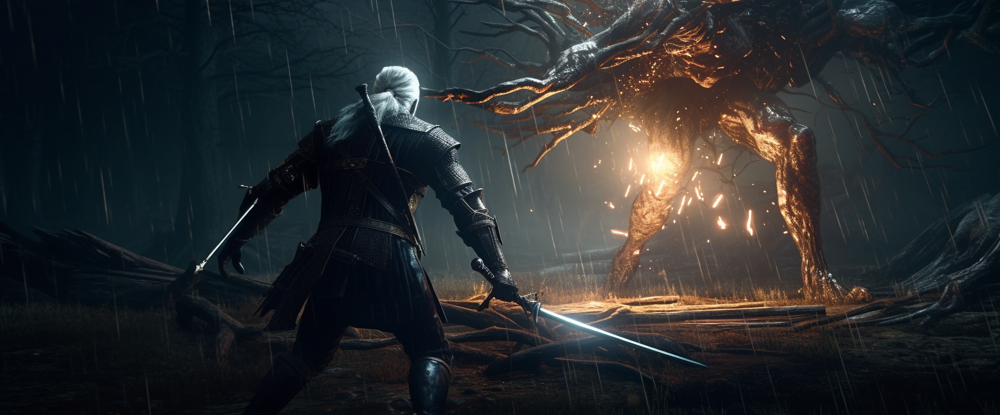
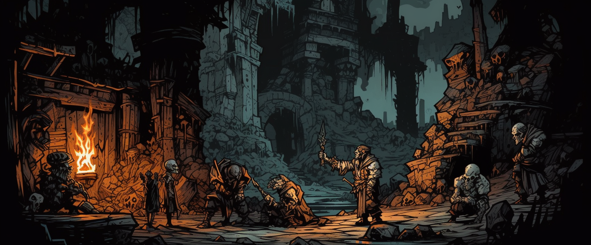
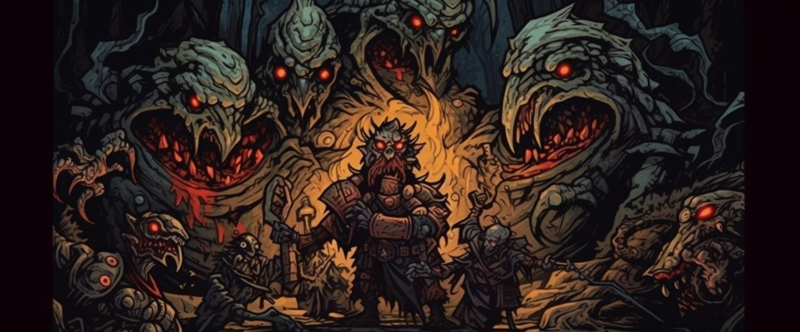

These specialized ChatGPT scripts have been developed to produce narrative text prompts that can be fed into a generative AI art program to create imagery. They have been created by Tango'One in conjunction with the community on the MidjourneyAI Discord channel image-jams / chatGPT prompt generation for Midjourney. To use these scripts, download one, open a ChatGPT session and paste in the script. When you get a response, copy it and paste it into MidjourneyAI. The generated prompts are likely to work with other generative AI programs as well. If you do use any of these scripts, please share your results and your tweaks to the community channel listed above. Direct link: https://discord.com/channels/662267976984297473/1050439812307497012.
| Category | Script Name | Description | Download Link | Example Result |
|---|---|---|---|---|
| Vehicles & Transportation | ChatGPT Script - AirShow | Imagery of aircraft | Download | |
| ChatGPT Script - CarChase | Action images of automobiles | Download | ||
| ChatGPT Script - CarShow | Still images of automobiles | Download | ||
| ChatGPT Script - Cars - Formula-One | Imagery of Formula 1 racing | Download | ||
| ChatGPT Script - Watercrafts | Imagery of boats and other watercraft | Download | |
|
| ChatGPT Script - Paper Airplanes | Multi-part script for making paper airplane images | Download | ||
| ChatGPT Script - Aerial Combat - Priming Start | Background to prime GPT for aerial combat material - Execute first | Download | |
|
| ChatGPT Script - Aerial Combat - Prompt Sequence | Guidelines and prompt request - Execute second | Download | ||
| ChatGPT Script - Aerial Combat - revised | Updated, good at static images but not action shots | Download | ||
| Architecture & Interior Design | ChatGPT Script - All white interior design | Interior design photos featuring a white palette | Download | |
| ChatGPT Script - Architecture - FLW | Architectural renders by Frank Lloyd Wright | Download | ||
| ChatGPT Script - StainedGlass | Imagery featuring stained glass artwork | Download | ||
| Animals & Nature | ChatGPT script - AnimalTime | Imagery of animals in natural surroundings | Download | |
| ChatGPT script - DragonTime | Images of Dragons | Download | ||
| ChatGPT Script - NatureIsFire | High-detailed imagery of nature | Download | |
|
| ChatGPT Script - NatureIsFire - Alternate Approach | High-detailed imagery of nature, a different prompt style | Download | |
|
| ChatGPT script - NatureIsFire-Mk-XII - Extreme Weather | Shots of extreme weather conditions | Download | ||
| Science Fiction & Space | ChatGPT Script - Approach Shot of an Alien World | Imagery of spacecraft nearing an alien planet | Download | |
| ChatGPT Script - Lightsabers | WIP script for generating Star Wars style lightsabers | Download | ||
| ChatGPT Script - Portraiture - StarWars | Professional style portraits in the style of the Star Wars universe | Download | ||
| ChatGPT Script - Portraiture Aliens | Professional style portraits of non-human beings | Download | ||
| ChatGPT Script - Satellite Imagery | Space imagery of planets | Download | |
|
| Fashion & Jewelry | Photorealistic Portraiture | Highly optimized script for creating photorealistic portait images. Adjust the "Thematic Subject" section as needed. | Download | |
| ChatGPT Script - Fashion Portraits | Combines Portraiture and FashionShow optimized for MJ5 | Download | ||
| ChatGPT Script - FashionShow | Imagery of high fashion models | Download | ||
| ChatGPT Script - Jewlery | Beautiful images of expensive jewelry | Download | ||
| ChatGPT Script - Frisky Illustration Style | A more risque type of illustration | Download | ||
| ChatGPT Script - Frisky Street Art Style | Portraiture images featuring urban styles | Download | |
|
| ChatGPT Script - Libertine | Portraiture images featuring free spirits whom push the boundary of acceptable moresurban styles | Download | ||
| Sports & Recreation | ChatGPT Script - Golfing | Images of golf courses and people playing golf | Download | |
| ChatGPT Script - Essence of a Song.txt | Imagery based on song lyrics style and substance | Download | ||
| ChatGPT Script - Tiki Bar.txt | Imagery of Tiki Bars | Download | ||
| ChatGPT Script - Vintage Travel Poster - Tiki Bar | Vintage travel style images featuring tiki bars | Download | ||
| Fantasy Worlds, Games, Movies, TV | ChatGPT Script - MagicalCityscape | Views of a city where magic is a reality | Download | |
| ChatGPT Script - Daedric Lords | Portraits of the Daedric Lords from The Elder Scrolls | Download | ||
| ChatGPT Script - Portraiture - WizardingWorld | Professional style portraits in the style of the Wizarding World universe | Download | ||
| ChatGPT_Random_DC | Imagery of DC-style comic book characters | Download | |
|
| ChatGPT Script - RedDeadRedemption | Imagery that recalls the video game Red Dead Redemption | Download | ||
| ChatGPT Script - Story Mode - GoT | Cinematic images for Game of Thrones | Download | ||
| ChatGPT Script - Story Mode - Moana | Cinematic images for live-action Moana | Download | |
|
| ChatGPT Script - Story Mode - Moana - Editorial | Character images for live-action Moana | Download | ||
| ChatGPT Script - Story Mode - The Witcher | Cinematic images for The Witcher | Download |  | |
| ChatGPT Script - StoryMode Style - WizardingWorld | Imagery that tells a story set in the Wizarding World universe | Download | ||
| ChatGPT Script - StoryMode Style - WoT | Imagery that tells a story set in the Wheel of Time universe | Download | |
|
| ChatGPT Script - StoryMode Style.txt | Imagery that tells a story | Download | ||
| Darkest Dungeon - Story Time | ChatGPT 4 generated story in the style of the Ancestor from Darkest Dungeon | Download | ||
| Darkest Dungeon - Narrator Text - part 1 | Inputs used to prime ChatGPT 4 for Story Time | Download | ||
| Darkest Dungeon - Narrator Text - part 2 | Inputs used to prime ChatGPT 4 for Story Time | Download |  | |
| Darkest Dungeon - Narrator Text - part 3 | Inputs used to prime ChatGPT 4 for Story Time | Download |  | |
| Darkest Dungeon - Narrator Text - part 4 | Inputs used to prime ChatGPT 4 for Story Time | Download | ||
| Darkest Dungeon - Narrator Text - part 5 | Inputs used to prime ChatGPT 4 for Story Time | Download | ||
| ChatGPT Script - Wars Or Battles | Action imagery of warfare | Download | ||
| Grand Theft Auto Styling Scripts | GTA 1 - Background and Styling | Reference details for setting and stylistic elements - Execute first | Download | |
| GTA 2 - Our Setting | Define locations for the other scripts - Execute second | Download | ||
| GTA 3 - Prompts from MJ using describe | Results from using describe on GTA screenshots, helps set prompt style - Execute third | Download | ||
| GTA 4 - Preparing prompt structure | Guidelines on prompt formatting - Execute fourth | Download | ||
| GTA 5 - First Generation Set | First set of results - you do not need to execute this one | Download | ||
| GTA 6 - Revising prompt structure for in-game scene | Updating the prompt guidelines to focus on scenes from the game | Download | ||
| GTA 7 - Revising prompt structure for in-game scene | Updating prompt guidelines to focus on characters | Download | ||
| Art & Design | ChatGPT Script - Illustration Style - Dynamic | Realistic comic-book style illustrations of subjects in motion | Download | |
| ChatGPT - Illustration - My Little Pony | WIP script for generating My Little Pony style imagery | Download | ||
| ChatGPT Script - Lite Brite | Imagery that recalls pictures made with the Lite Brite toy | Download | ||
| ChatGPT Script - Nose Art Illustration Style | Imagery recalling the plane nose-art styles popular in the US military | Download | ||
| ChatGPT Script - Photorealism | General subject matter in a photorealistic style | Download | ||
| ChatGPT Script - PanAm Style | Travel posters in the vintage Pan-American Airlines style | Download | ||
| ChatGPT Script - Portraiture Style | Professional style portraits | Download | ||
| ChatGPT Script - 70sAlbums | Imagery that recalls vinyl album artwork from the 1970s and early 80s | Download | ||
| ChatGPT Script - Sandcastles_Random_DC | Whimsical sand castles | Download | ||
| General Purpose | ChatGPT Script - Script to Develop Scripts | A script that will take input of other scripts and emulate their style to create a new script | Download | |
| ChatGPT Script - Free Your mind | Script that will ask for thematic input and then how you want GPT to vary it | Download | ||
| ChatGPT Script - Simulos Script | A general purpose script for creating a wide variety of imagery | Download | ||
| ChatGPT Script - WiseBot Variation 4 | A general purpose script for generating a wide variety of imagery prompts | Download | ||
| ChatGPT - Midjourney Prompt Engine | Multi-part script that will create high-detail results across genres | Download | ||
| GPT-based Gaming | ChatGPT - Adventure Game Engine | Play out a text-based adventure in ChatGPT 4 | Download | |
| ChatGPT - Wrestling Game Engine | Play out a text-based Professional Wrestling RPG in ChatGPT 4 | Download | ||
When working with an existing script, sometimes ChatGPT will either lsoe track of what it is doing, give very verbose replies or otherwise act in unexpected ways. When this occurs you have two basic choices. The first is simply to start a new chat session and start over. This will often correct situations when ChatGPT is just giving badly formed replies. The second choice is to work with ChatGPT like it is meant to be used - as a conversation. Simply offer corrective guidance to ChatGPT within your session and coas him back to what you want.
These scripts are provided as-is. No warranty is offered. If you would like help, please visit the discord channel linked at the top. Our community is very friendly and more than willing to assist.